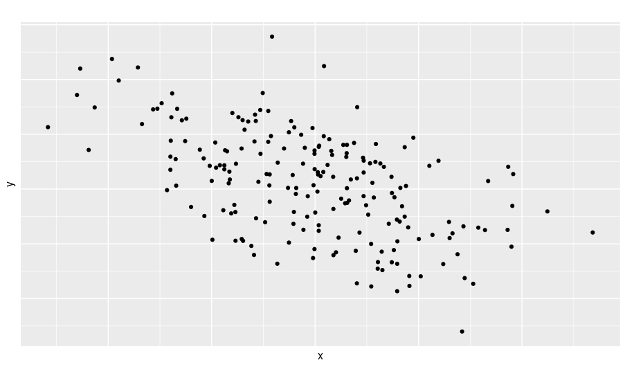
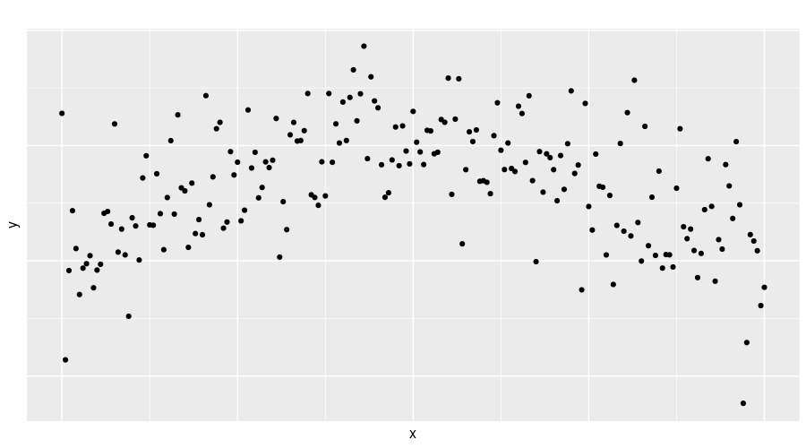

PRESENTACIÓN

El presente tutorial contiene preguntas relacionadas con el análisis de correlación y el modelo regresión lineal simple. A continuación se presentan un resumen con los principales conceptos:
CONCEPTOS
A continuación se relacinan los principales conceptos sobre correlación y el modelo de regresión lineal simple
COEFICIENTE DE CORRELACION DE PEARSON
El coeficiente de correlación de Pearson mide la magnitud de la asociación lineal entre dos variables numéricas en escala de razón.
\[r = \dfrac{cov(x,y)}{\sqrt{s_{x}^{2}\hspace{0.1cm} s_{y}^{2}}}\]

x=c(18.6, 20.6, 18.8, 21.5, 18.9, 18.6, 17.8, 19.9, 21.6, 22.1) y=c(10.4, 11.3, 9.1, 11.0, 8.6, 9.4, 8.4, 10.3, 10.5, 11.9) cor(x,y)
[1] 0.8479143COEFICIENTE DE CORRELACION SPEARMAN
Este coeficiente emplea en variables numéricas en escala de intervalo, construidas como resultado de instrumentos estandarizados para medir variables latentes, que son de observación directa
CUESTIONARIO
Pregunta 1
El siguente gráfico representa la relación entre dos variables \(X\) y \(Y\).

Pregunta 2
Pregunta 3
Pregunta 4

Pregunta 5
PROBLEMAS
Problema 1
Para el grupo de datos contenidos en la base arboles (data(arboles)) determine que variable (altura o diametro) tiene más relación con la variable peso.
library(paqueteMOD)
data("arboles")library(paqueteMOD)
data("arboles")
cor(,)library(paqueteMOD)
data("arboles")
cor(arboles$peso,arboles$diametro)
cor(arboles$peso,arboles$altura)**Problema 2*
Realice las pruebas de hipótesis con las que pueda verificar si las correlaciones entre las variables : peso, diametro y altura son diferentes de cero
library(paqueteMOD)
data("arboles")library(paqueteMOD)
data("arboles")
cor.test()library(paqueteMOD)
data("arboles")
arboles=as.data.frame(arboles)
cor.test(arboles$peso,arboles$diametro)
cor.test(arboles$peso, arboles$altura)